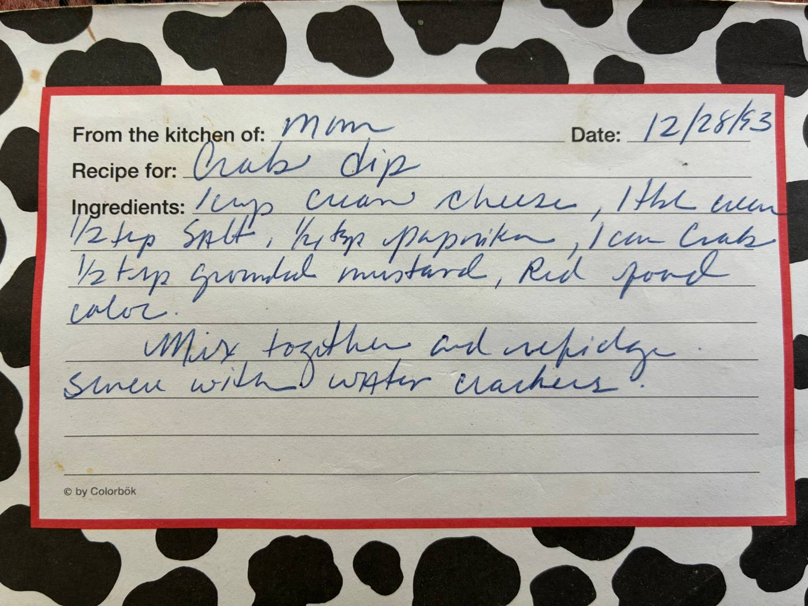

Appetizers
Crab Dip
From the kitchen of Mom
CookNo cooking
ServeChilled

Mom's original card · tap to enlarge
Ingredients
Method tap a step to mark it done
- Mix everything together and refrigerate.
- Serve with water crackers!
